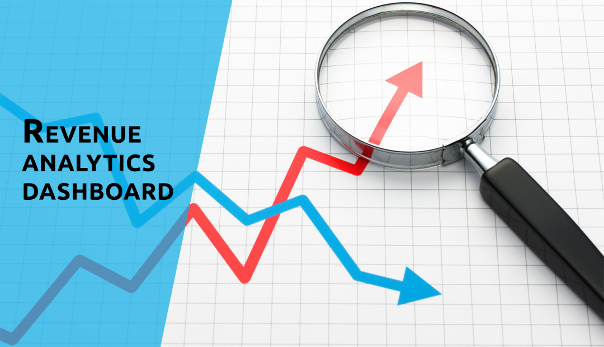

AdventureWorks is a bicycle manufacturing company, this database contains standard transactions data from an Enterprise Resource Planning System.
It contains data from the following scenarios of the company: Human Resources, Product Management, Manufacturing, Purchasing, Inventory, Sales, and Admin.
This analysis focuses on the Sales scenario of the data.
Data was pulled from SQL Server query editing was done in 'Microsoft SQL Server Management Studio' and visualization part was using 'Microsoft Power BI'.
MS Excel and Python were used for Analytics.

Retailers utilize market basket analysis, a data mining approach, to boost sales by better understanding client buying habits. Identifying product groups and items that are most likely to be bought together, includes evaluating big data sets, such as purchase history.
Association rules or simply associations tell us which products tend to be selected together and how knowing one product is in a basket will predict what else may be in the basket.
This type of information is incredibly useful.Market basket analysis may help sales and marketing teams develop more effective product placement, pricing, cross-sell, and up-sell tactics.
When you segment customers into different classes, you will better understand their needs, preferences and buying patterns. Your marketing and sales team can then tailor their efforts to reach out to your customers in the most fitting way. The result of the guided campaigns and actions will be a boost to customer loyalty and conversations. With customer segmentation, your business can better understand every customer and align relevant strategies and tactics to meet their distinctive needs, helping you to make more profits.

Customer churn is an urgent and expensive problem for B2B brands.
The key metric tracked in this report is the customer churn rate. Customer churn rate analysis is the process of measuring and understanding the percentage of customers who stop using or buying a product or service during a given time period.
A/B testing, also known as split testing, is a marketing experiment where two different versions of a campaign or a piece of content are tested on your audience to discern which performs better. A/B test can work for any business. It doesn’t matter what industry your business is in. It also doesn’t matter whether your business is B2C or B2B or whether you offer products or services — you can use A/B testing to learn more about your audience and make changes so that you’re reaching them in the most effective way.

AtliQ Grands owns multiple five-star hotels across India. They have been in the hospitality industry for the past 20 years. Due to strategic moves from other competitors and ineffective decision-making in management, AtliQ Grands are losing its market share and revenue in the luxury/business hotels category. As a strategic move, the managing director of AtliQ Grands wanted to incorporate “Business and Data Intelligence” to regain their market share and revenue.
Cohort analysis is an analytical technique that categorizes and divides data into groups with common characteristics prior to analysis. This technique is typically used to make it easier for organizations to isolate, analyze, and detect patterns in the lifecycle of a user, to optimize customer retention, and to better understand user behavior in a particular cohort.
From this data, we will do a basic summarization of the sales and profits of the trader for the year 2018 based on the city or states where people shop the most, the most selling product category etc.
ABC XYZ Analysis, Stock Turn Over Ratio, Demand Forecast
Template Designs